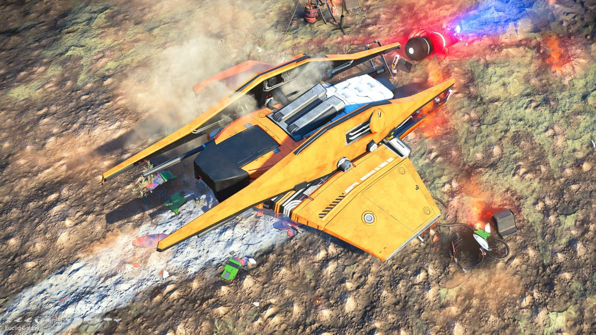
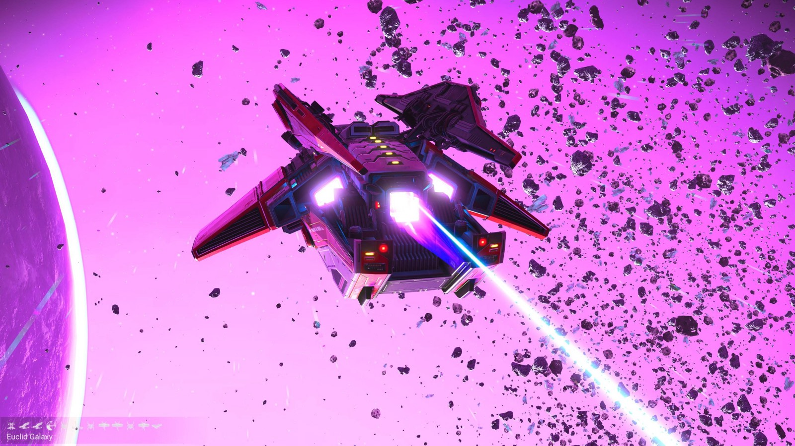
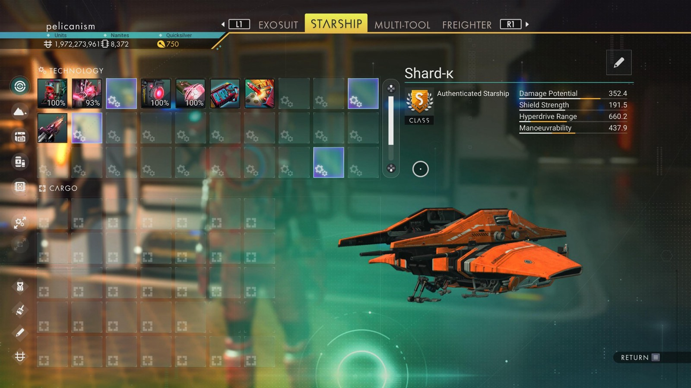

Waypoint 32
Devidiu



- Portal glyphs
- 21147678878B
- Face · Bird · Bird · Eclipse · Bug · Boat · Bug · Dragonfly · Dragonfly · Bug · Dragonfly · Fish
- Distance from core
- 1,092,493 LY
- Jump from previous
- 1,871 LY
- Planet coordinates
- +34.19, +13.58
- Ship as found
- C-class, 33+23 slots
- S-class ship
- Shard-κ
- Damage
- 352.4
- Shield
- 191.5
- Hyperdrive
- 660.2
- Manoeuvrability
- 437.9